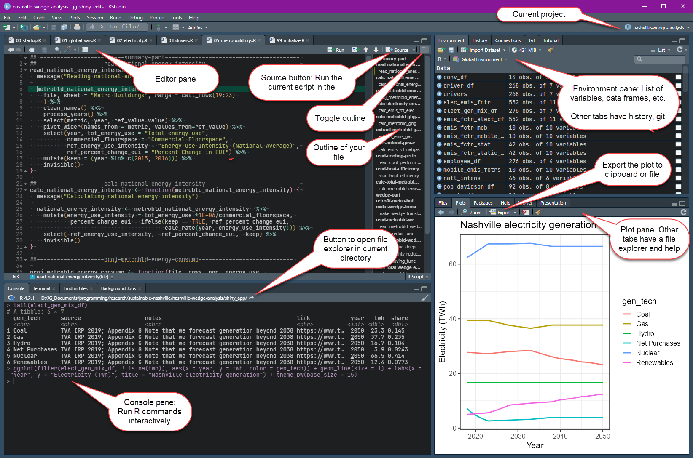
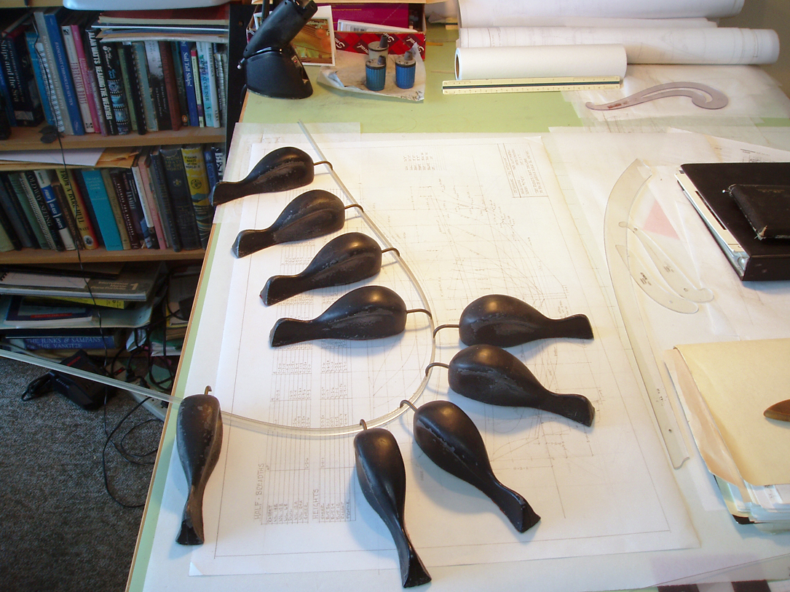
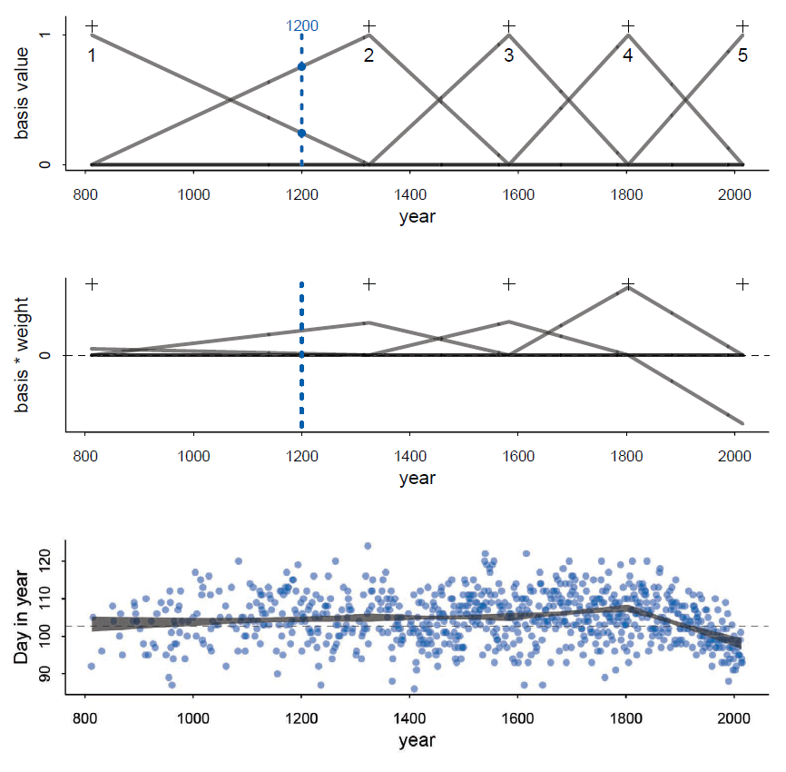
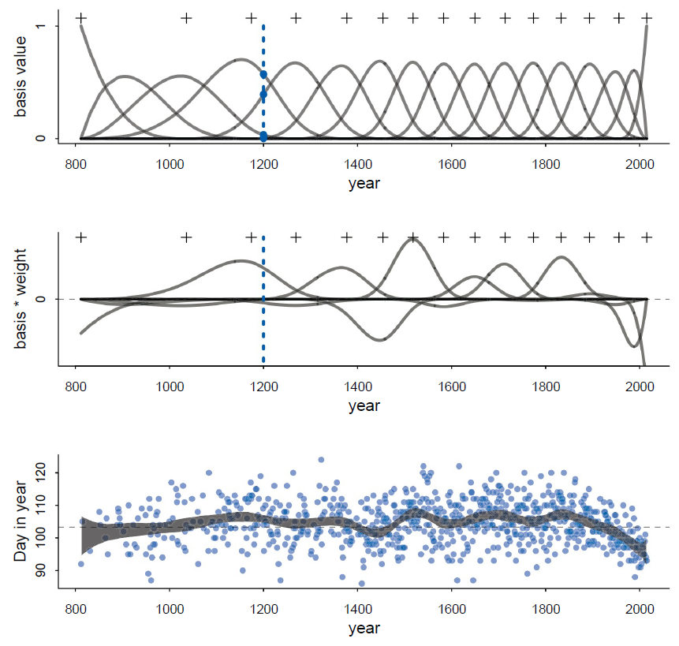

rethinking package now uses cmdstanr
as its default for Monte Carlo sampling , instead of rstan.
cmdstanr is more reliable and up to date;
rstan is being phased out.git for revision
controlgit

data.frame)library(tidyverse))
data.frames (and
tibbles)plot command
plot(x, y) # plot y vs. x with points
plot(x, y, type = "l") # plot with a line
plot(height ~ weight, data = df) # with a data.frameggplot2 (library(tidyverse) or
library(ggplot2))
ggplot command
data(Howell1)
ggplot(Howell1, aes(x = weight, y = height)) +
geom_point() +
labs(x = "weight (kg)", y = "height (cm)",
title = "!Kung San height and weight")
ggplot(Howell1, aes(x = weight, y = height)) +
geom_point(aes(shape = male, size = age),
"color = "magenta") +
labs(x = "weight (kg)", y = "height (cm)",
title = "!Kung San height and weight")Philosophy: Grammar of Graphics
data.frame, array,
matrix
Howell1[107, 3]
Howell1[107,] for all columns of the rowHowell1[,"height"] for all rows of the “height”
columnHowell1[c(1,3,5),10:15] to get rows 1, 3, and 5 of
columns 10–15.Howell1["age" >= 18, c("height", "weight")]library(tidyverse))
data.frame
tibble (an enhanced
data.frame)
Select columns:
select(Howell1, height, weight, age)
select(Howell1, -male, -age)Select all columns that start with “foo_” but don’t
end with “bar”
select(my_data, starts_with("foo_"),
-ends_with("bar"))Select rows:
filter(Howell1, age >= 18, male)Modifying data: mutate
mutate(Howell1, hgt_std = (height - mean(height)) / sd(height),
wt_std = (weight - mean(weight)) / sd(weight))Summarizing data
summarize(d, height = mean(height), weight = mean(weight))
d_tmp <- group_by(d, male)
d_tmp <- summarize(d_tmp, height = mean(height),
weight = mean(weight))
d_tmp <- ungroup(d_tmp)Pivot tables: pivot_longer,
pivot_wider
relig_income dataIt can get confusing to combine multiple commands
ungroup(summarize(group_by(filter(Howell1, age >= 18), male),
height = mean(height), weight = mean(weight)))Pipe commands allow us to break this up:
Howell1 %>% filter(age >= 18) %>%
group_by(male) %>%
summarize(height = mean(height), weight = mean(weight)) %>%
ungroup()The pipe operator %>% sends it input (what’s on
the left) to the first argument of the function on the right.
Howell1 %>% filter(age >= 18) is the same as
filter(Howell1, age >= 18)
Howell1 %>% filter(age >= 18) %>% group_by(male)
is the same as
group_by(filter(Howell1, age >= 18), male)
Base R
mdl <- quap(alist(
height ~ dnorm(mu, sigma),
mu <- a + b * weight,
a ~ dnorm(178,20),
b ~ dlnorm(0,1)
sigma ~ dunif(0,50)
), data = d2)
w_lst <- data.frame(weight = seq(30, 70, by = 5))Sample from posterior predictive distribution for data (e.g.,
height):
extract.samples(mdl, 1000)Sample from posterior of model link (mu):
link(mdl, w_list)Tidyverse (library(tidyverse))
library(tidybayes)
library(tidybayes.rethinking)Sample from posterior predictive distribution for data (e.g.,
height):
predicted_draws(w_lst, mdl, ndraws = 1000,
value = "height")
add_predicted_draws(mdl, w_lst, ndraws = 1000,
value = "height")Sample from posterior of model link (mu):
linpred_draws(w_lst, mdl, ndraws = 1000,
value = "height")
add_linpred_draws(mdl, w_lst, ndraws = 1000,
value = "height")add_ versions are the same, but reverse the order of
the first two arguments (model object and new data).

## 'data.frame': 1215 obs. of 5 variables:
## mean sd 5.5% 94.5% histogram
## year 1408.00 350.88 867.77 1948.23 ▇▇▇▇▇▇▇▇▇▇▇▇▁
## doy 104.54 6.41 94.43 115.00 ▁▂▅▇▇▃▁▁
## temp 6.14 0.66 5.15 7.29 ▁▃▅▇▃▂▁▁
## temp_upper 7.19 0.99 5.90 8.90 ▁▂▅▇▇▅▂▂▁▁▁▁▁▁▁
## temp_lower 5.10 0.85 3.79 6.37 ▁▁▁▁▁▁▁▃▅▇▃▂▁▁▁
library(splines)
d2 <- filter(d, ! is.na(doy)) # omit missing values
n_knots <- 15
knot_list <- quantile(d2$year,
probs=seq(0,1, length.out = n_knots))
# Create basis function matrix
B <- bs(d2$year, knots = knot_list[-c(1,n_knots)],
degree = 3, intercept = TRUE)
mdl <- quap(
alist(
D ~ dnorm(mu, sigma),
mu <- a + B %*% w, # %*% is matrix multiplication
a ~ dnorm(100, 10),
w ~ dnorm(0, 10),
sigma ~ dexp(1)
),
data = list(D = d2$doy, B = B),
start = list(w = rep(0, ncol(B)))
)